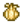
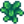
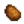
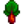
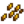
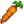
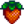
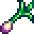
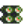

Primavera:
La Primavera es la estación cuando los jugadores empiezan el juego. Le sigue el Verano y le precede el Invierno.
En Primavera, el césped es verde. Los árboles recuperan sus hojas, y los pétalos rosas ondean en los días de viento. También hay una variedad de cultivos, artículos recolectables, y peces que solo aparecen durante esta estación. La temporada de la Frambuesa solo dura entre el día 15 y 18 de la Primavera. Cuando la Primavera empieza, nuevos troncos, rocas y parches de césped aparecerán en la granja, en el Bosque Tizón y Pueblo Pelícano.

 Festival del huevo
Festival del huevo  Festival del Desierto
Festival del Desierto Cultivos
Los siguientes cultivos pueden crecer en la Primavera. Ten en cuenta que el "Precio de semilla" muestra el precio de la Tienda local Pierre's, a no ser que se indique lo contrario. "Cosecha máxima por estación" asume que no se utiliza fertilizante y que no se elige la profesión de Agricultor. "Beneficios/Día" asume que no se usa fertilizante y que no se elige la profesión de Labrador. Consulte la página de Cultivos para ver el cálculo completo.
Una sola cosecha:
Una sola cosecha significa que para cosechar nuevamente el cultivo, tienes que plantar de nuevo las semillas.
| Cultivo | Precio de la semilla | Dias para crecer | Cosecha Maxima por estacion | Se vende por | Beneficio/Dia |
|---|---|---|---|---|---|
| Allium azul |  30 30 |
7 días | 3 | 50 |
≈2,86 |
| Coliflor | 80 |
12 días | 2 | 175 |
≈7,92 |
|  Ajo | 40 |
4 días | 6 | 60 |
≈5 |
|  Col rizada | 70 |
6 días | 4 | 110 |
≈6,67 |
 Chirivía Chirivía |
20 |
4 días | 6 | 35 |
≈3,75 |
|  Patata | 50 |
6 días | 4 | 80 |
≈5 |
|  Ruibarbo |
Oasis |
13 días | 2 | 220 |
≈9,23 |
| Tulipán | 20 |
6 días | 4 | 30 |
≈1,67 |
|  Arroz sin moler | 40 |
Irrigado: 6 días Irrigado: 8 días |
4 3 |
20 |
Irrigado: No Irrigado: |
|  Zanahoria | 0 |
3 días | 9 | 35 |
≈11,67 |
Varias cosechas:
Tenga en cuenta que cada planta de café produce 4 Granos de café en su cosecha.
Para cosechar nuevamente el cultivo, no es necesario plantar de nuevo la semilla o kit.
| Cultivos | Precio de semilla | Días para crecer | Crece de nuevo | Cosecha máxima por estación | Se vende por | Oro/Día |
|---|---|---|---|---|---|---|
| Grano De Cafe |
Carro Ambulante: |
10 días | 2 días |
Primavera: 9 Primavera y Verano: 23 |
15 (x4) |
Carro Ambulante (2 estaciones): Grano de café cosechado/Duende del polvo (1 estación): Grano de café cosechado/Duende del polvo (2 estaciones): |
 Judía verde Judía verde |
60 |
10 días | 3 días | 6 | 40 |
7,2 |
|  Fresa |
Festival del huevo: |
8 días | 4 días |
Plantada en el día 1 de la primavera: 5 Plantada en el día del Festival del huevo: 2 |
120 |
Plantada en el día 1 de la primavera: Plantada en el día del Festival del huevo: |
Recoleccion:
El jugador puede encontrar los siguientes artículos mientras recolecta durante la Primavera. Los porcentajes descritos para cada ubicación son el porcentaje de todos los objetos buscados en la ubicación que (en promedio) serán del objeto especificado.
| Imagen | Nombre | Descripcion | Encontrado en | Beneficio | Energia | Salud  |
Se usa en |
|---|---|---|---|---|---|---|---|
 |
Rábano silvestre | Una raíz picante que se encuentra en la primavera. |
|
|
|
|
¿? |
 |
Narciso | Una flor tradicional de primavera popular como regalo. |
|
|
|
|
¿? |
 |
Puerro | Un delicioso pariente de la cebolla. |
|
|
|
|
¿? |
 |
Diente de león | No es la flor más bonita, pero sus hojas quedan bien en ensaladas. |
|
|
|
|
¿? |
|  | Cebolleta | Crecen salvajes durante la primavera. |
|
|
|
|
¿? |
 |
Colmenilla | Buscada por su sabor único a frutos secos. |
|
|
|
|
¿? |
 |
Seta común | Con un ligero toque a frutos secos y buena textura. |
|
|
|
|
¿? |
 |
Frambuesa | Una baya de primavera con el sabor del bosque. |
|
|
|
|
¿? |
Peces:
Algunos peces sólo pueden capturarse en determinadas estaciones del año. A continuación se enumeran todos los peces que pueden capturarse en Primavera.
No se enumeran los peces que se pueden pescar durante todas las estaciones.
Nota: Cualquier pescado puede ser usado para recetas con la etiqueta "Pescado (cualquiera)" (ej., Sashimi,  Rollitos maki, Fertilizante deluxe) Aca abajo va un cuadro.